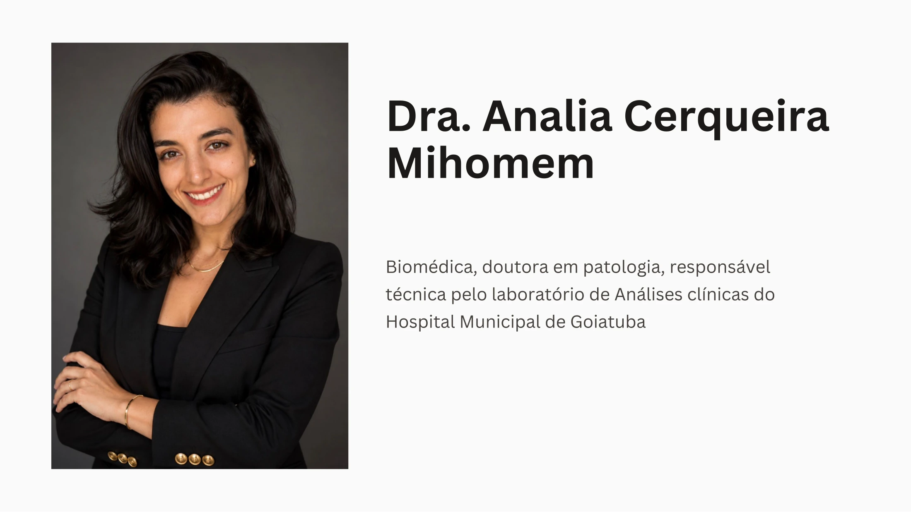
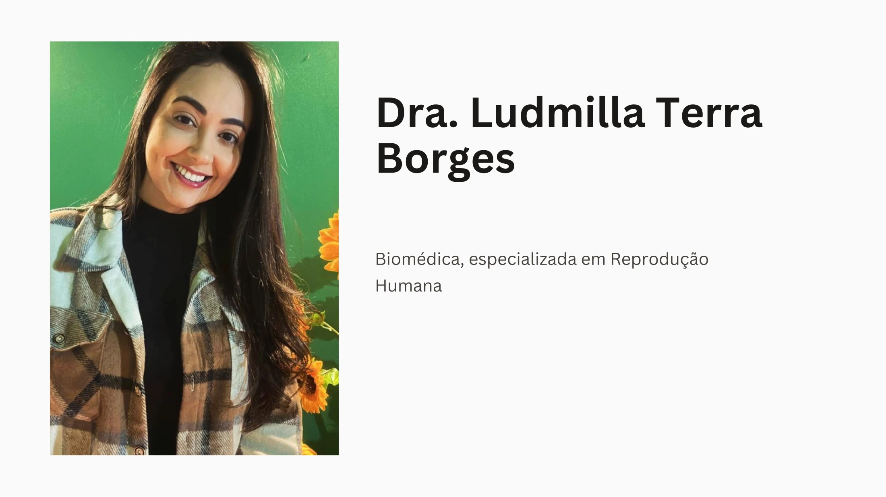
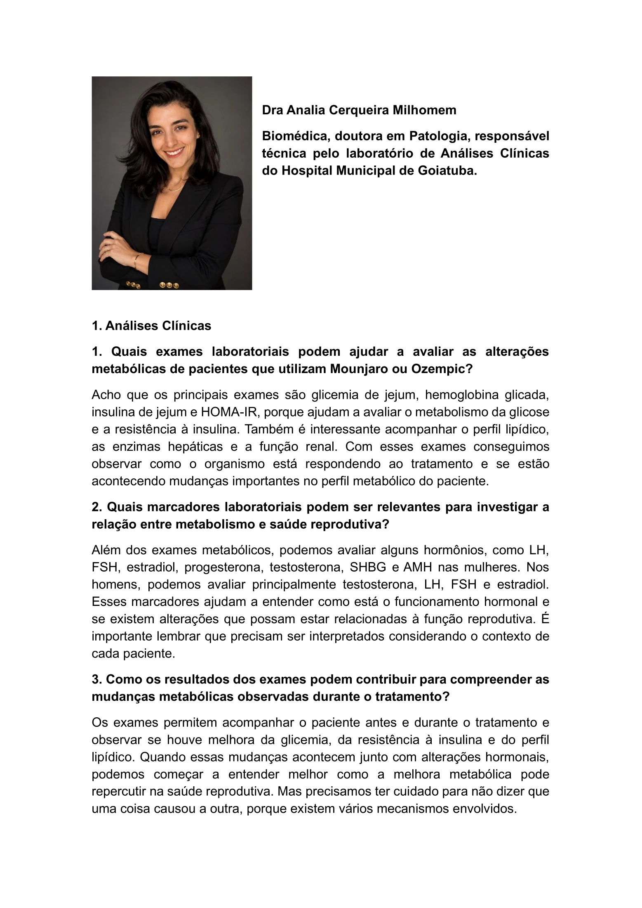

Entrevistas em Biomedicina

Dra. Analia Cerqueira Mihomem
5 páginas

Dra. Ludmilla Terra Borges
5 páginas
Dra. Stefane Madalena Marques
5 páginas
Dr. João Pedro Torres Guimarães
5 páginas

Entrevistas completas
6 páginas